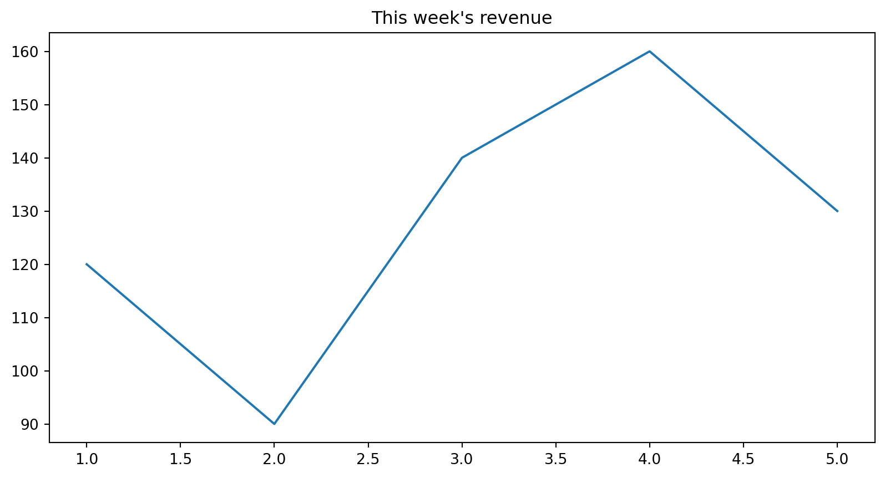
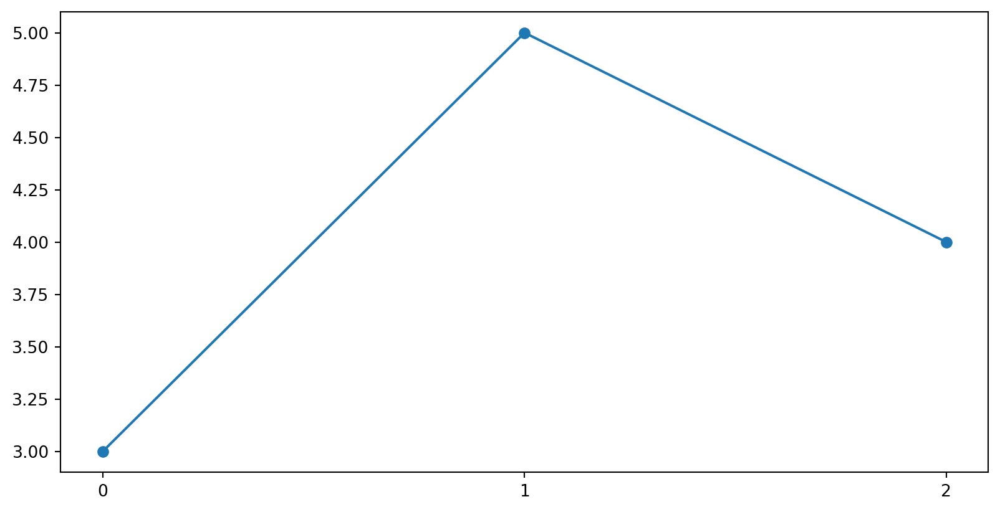
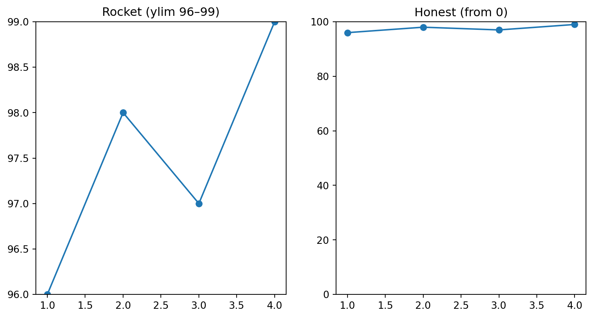

Friday, the boardroom. Picture it: the investor slides a pencil out of her jacket and sharpens it while you set up, the sound louder than it has any right to be.
. . .
Last week you handed her honest numbers, a table she could trust. She read exactly one row, looked up, and said the thing this whole session is about:
“Tables are homework. Charts are arguments.”
. . .
A number convinces the careful. A picture convinces the room. Today: draw the right chart for the question, and refuse to draw a dishonest one.
Warm-up
Three questions from Episode 8. Commit. Hands up before the reveal.
Question 1
orders[orders["zone"] =="Nord"]
returns…
a) a True/False column b) only the Nord rows c) an error from comparing text
Answer 1
b) only the Nord rows: the True/False column is what the inner expression orders["zone"] == "Nord" makes. Wrapped in orders[...], that mask keeps the rows where it’s True and drops the rest.
Question 2
Tobi’s AI wrote this. orders is a normal DataFrame. What happens?
orders.summarize()
a) a summary table b) an empty DataFrame c) an AttributeError
Answer 2
c) AttributeError: pandas has .describe(), not .summarize(). The AI invented a plausible name. An AI that sounds sure is not the same as an API that exists. You verify, every time.
Question 3
orders["total_eur"].describe()
shows…
a) the first five rows of the column, like .head() b) count / mean / std / min / quartiles / max c) the column’s dtype, like .dtypes
Answer 3
b) count / mean / std / min / quartiles / max. One line, the column’s whole statistical fingerprint. That’s the real method Tobi’s AI was reaching for.
The first chart
Matplotlib in four lines
Everyone plots with matplotlib, imported as plt. Four lines turn a list of numbers into a picture:
import matplotlib.pyplot as pltdays = [1, 2, 3, 4, 5]revenue = [120, 90, 140, 160, 130]plt.figure() # OPEN: a fresh canvas, so this chart# doesn't draw on the last oneplt.plot(days, revenue) # x, then yplt.title("This week's revenue")plt.gca() # SHOW: "get current axes" (the chart)

. . .
Two habits for every chart cell: open with plt.figure() (a clean canvas) and end with plt.gca(). In marimo there’s no plt.show(); the figure appears as the cell’s last expression, and plt.plot(...) alone returns line objects, not a picture. (A plain script run from a terminal does need plt.show() at the end; that’s Session X.) Same frame around every chart in today’s lab.
Predict: what’s on the x-axis?
Tobi is in a hurry and hands plotone list, no days:
plt.plot([3, 5, 4])
What does the x-axis show?
a) 3, 5, 4, the values themselves b) 0, 1, 2, the list positions c) 1, 2, 3, counted the human way
. . .
Predict first. Pick a letter, then I reveal the answer.
Answer: the positions, from zero
b) 0, 1, 2: with one list, matplotlib takes it as y and invents x as the positions, and Python counts positions from 0:
import matplotlib.pyplot as pltplt.figure()plt.plot([3, 5, 4], marker="o")plt.xticks([0, 1, 2]) # show only whole positionsplt.gca()

. . .
Want days 1-5 on the axis? Pass them: plt.plot(days, revenue), x first.
The parts of a chart
Every honest chart names its axes. xlabel, ylabel, title, and (when there’s more than one line) a legend:
import matplotlib.pyplot as pltdays = [1, 2, 3, 4, 5]revenue = [120, 90, 140, 160, 130]plt.figure()plt.plot(days, revenue, label="Revenue") # label feeds the legendplt.xlabel("Day") # what the x-axis countsplt.ylabel("Revenue (€)") # what the y-axis measuresplt.title("This week's revenue") # what the picture is aboutplt.legend() # the little key, one entry per labelplt.gca()
a) a zig-zag line hopping between the points in list order b) the same dots as scatter, joined into a smooth trend c) an error: plot refuses x values that are not sorted ascending
. . .
Predict first. Pick a letter, then I reveal the answer.
Answer: a zig-zag in list order
a) a zig-zag: plot connects the points in the order you gave them, never mind the x values. Order 1 to order 2 to order 3, back and forth:
import matplotlib.pyplot as pltminutes = [31, 19, 44, 22, 28]euros = [22, 24, 19, 9, 15]plt.figure()plt.plot(minutes, euros, marker="o") # joined in LIST orderplt.gca()

. . .
A line says the points follow each other, and orders don’t. Two numbers per order with no sequence between them is a job for scatter.
Predict: how many bars?
The same four numbers, two ways. On the left, a bar per number; on the right, a histogram:
The bar chart shows 4 bars. How many bars does the histogram show?
a) 4: one bar per number b) 15: one bar per unit up to the max c) about 2-3 lumps: it counts ranges
. . .
Predict first. Pick a letter, then I reveal the answer.
Answer: about 2-3 lumps
c) about 2-3 lumps: the histogram groups the numbers into ranges and counts how many fall in each. 8 and 9 land in the same bucket, so that bar is two tall:
import matplotlib.pyplot as pltvalues = [8, 12, 9, 15]plt.figure()plt.subplot(1, 2, 1)plt.bar(range(4), values) # one bar per NUMBERplt.title("bar: 4 categories")plt.subplot(1, 2, 2)plt.hist(values, bins=3) # counts how many per RANGEplt.title("hist: 3 ranges")plt.gca()
. . .
Bar counts CATEGORIES; histogram counts RANGES. Same numbers, different question.
A five-minute pause after this one, then honest charts.
Honest charts + the AI chart assistant
The same data, told two ways
Four weeks of revenue, [96, 98, 97, 99], barely moving. Where the y-axis starts decides: the left gets you a term sheet, the right gets you trusted. Same numbers, and the room sees a rocket or the truth:
AI is genuinely good at plotting code, if you drive it like a co-pilot:
Describe the data and the question: “I have orders with columns zone (text) and total_eur (float). Bar chart of total revenue per zone.”
Let it draft the plot code.
Verify three things before you believe the picture:
Do the columns it used actually exist?
Does the y-axis start where you claim?
Does the chart type fit the question?
. . .
The pilot flies; the co-pilot advises. You still land the plane.
Two ways AI charts lie
Invented column names. The AI writes orders["revenue"], but your column is total_eur: a KeyError, exactly the confident-nonsense you caught in Episode 8. Read the code before you run it.
Silently “dramatic” defaults. Ask for a growth chart and some assistants hand back a tight y-axis that flatters the trend: no warning, no comment. The chart runs; that’s what makes it dangerous.
. . .
Both threads, one rule: an AI chart runs long before it’s true. You verify the columns and the axis, every time.
Zed + Mistral Vibe: editor and the AI agent inside it, on your Session VI key. AI-tools guide
. . .
Do it in advance, and bring the laptop plus one downloaded lab .py. Session X opens with Checkpoint 5 (Sessions VIII-IX), then builds on a working toolchain. Install fights you? Ask in class or by e-mail.
Same eighty orders, now with pictures: a line for daily revenue, a bar for zones, a histogram for the value spread, a scatter that finds no pattern, and Tobi’s cliff-edge growth slide, which you’ll flatten into the truth
Every chart opens with plt.figure() and closes with plt.gca()
AI is allowed: draft with it, then verify the columns and the axis before you believe it
It runs entirely in your browser: no setup, just click and code
. . .
Download your .py before you leave. It’s the appendix of your pitch: the file that proves every chart came from the real data.
Wrap-up
Three things to remember
Every chart, one frame. Open with plt.figure(), close with plt.gca(); label the axes and title it. A chart nobody can read argues nothing.
Match the chart to the question. Categories → bar, distribution → histogram, two numbers → scatter, time → line. The wrong chart is a lie; and “no pattern” is a real finding.
Honest axis, verified code. Growth charts start at 0, and every AI-drafted plot gets checked: do the columns exist, does the axis start where you claim?
. . .
Season finale next: git, real files, and the project kickoff. We leave the browser for your own machine: the toolchain you install this week is the price of admission.
Literature
Books to start with
Wilke, C. (2019). Fundamentals of data visualization: A primer on making informative and compelling figures (First edition). O’Reilly Media. Link to the free book website
The best single book on why a chart works: principles over code. Highly recommended.
Downey, A. B. (2024). Think Python: How to think like a computer scientist (Third edition). O’Reilly. Link to free online version
. . .
Building charts with AI this session? Revisit the AI Tools page: describe-then-verify is the whole workflow. Matplotlib’s own pyplot tutorial is a friendly next step.